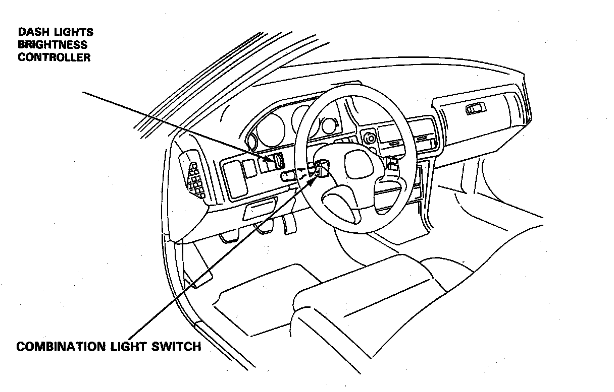
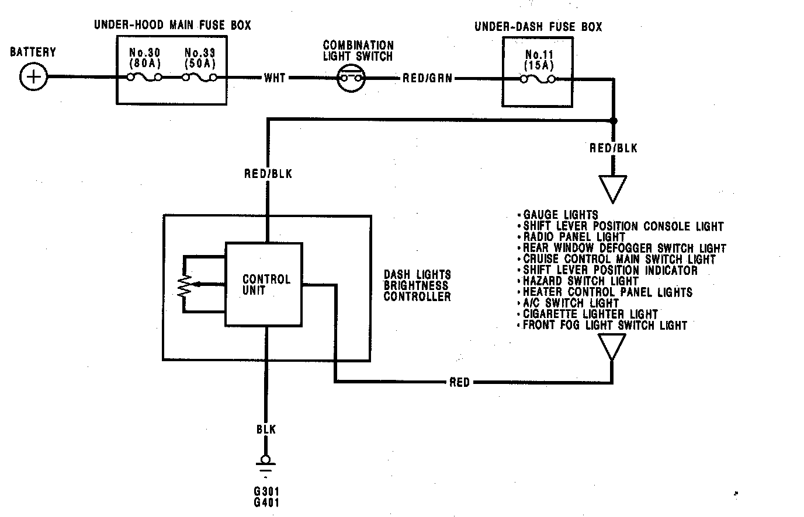
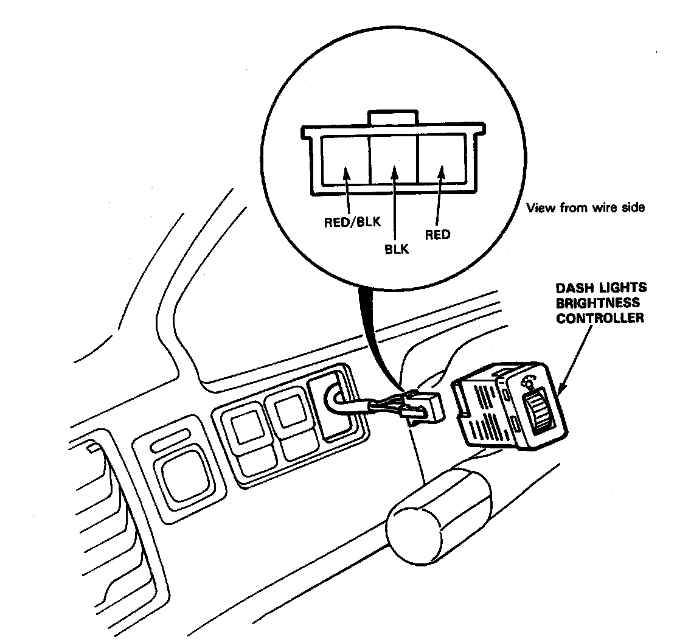
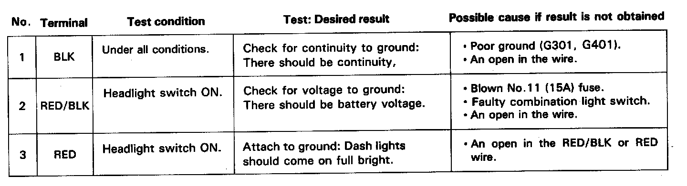

Dashlight Brightness Control
Dash Lights Brightness Controller:

Circuit Diagram:

Dashlight Controller Connector View:

Dashlight Controller Input Test:

Note: The control unit is built in the dashlight brightness controller.
Remove the dashboard lower panel. Push out the controller from behind the instrument panel, then disconnect the 3-P connector from the controller.
Make the following input tests at the harness pins. If all tests prove OK, yet the dashlights still cannot be controlled, check the connector for good connection. If OK, then replace the controller.